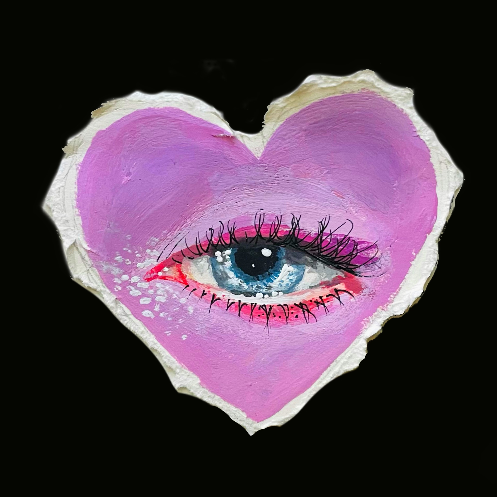
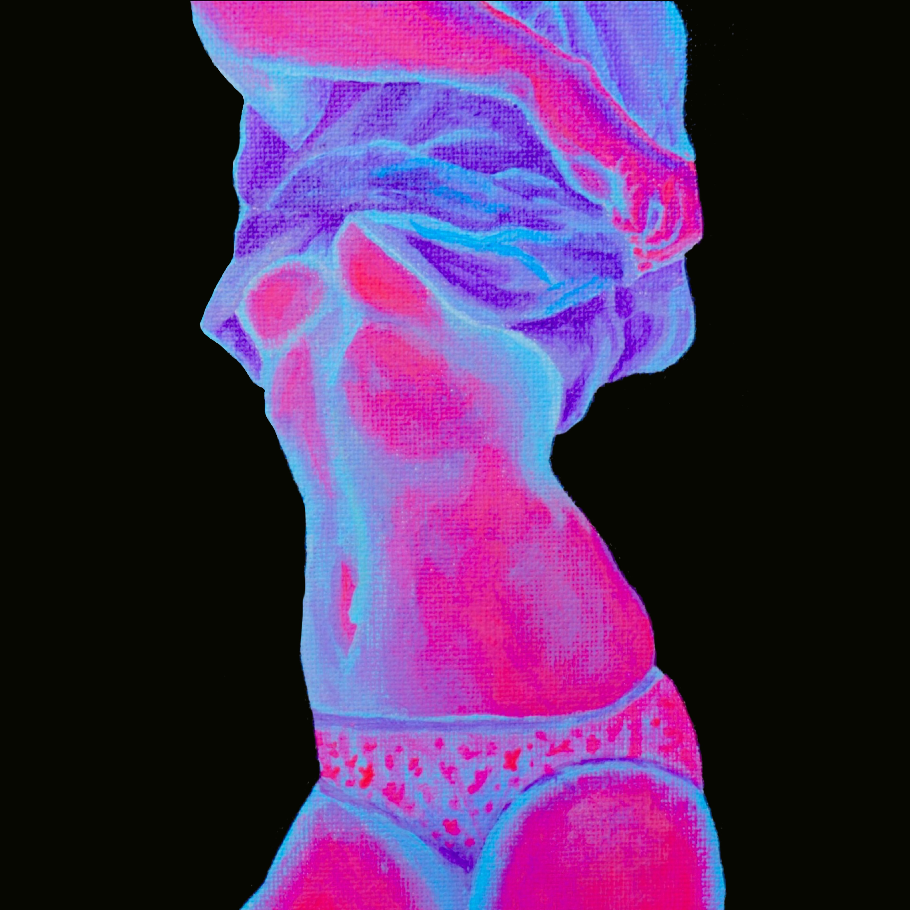
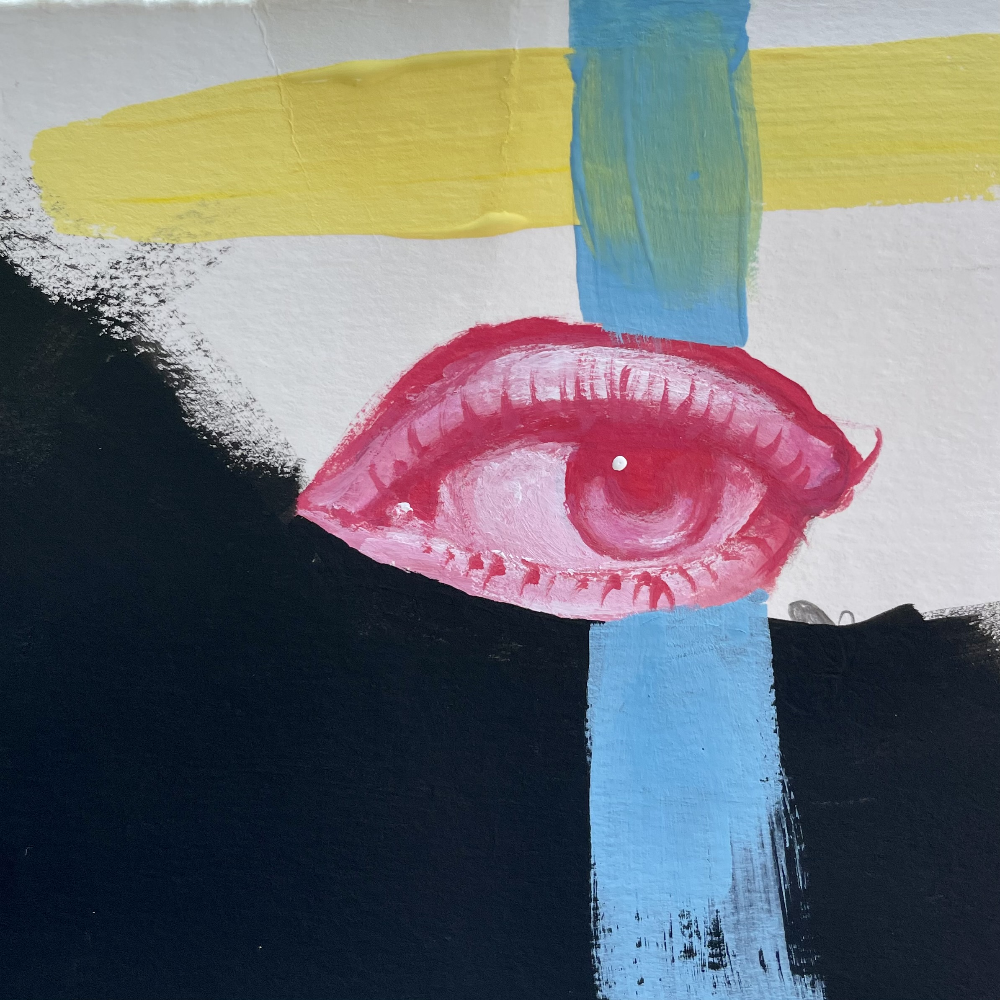
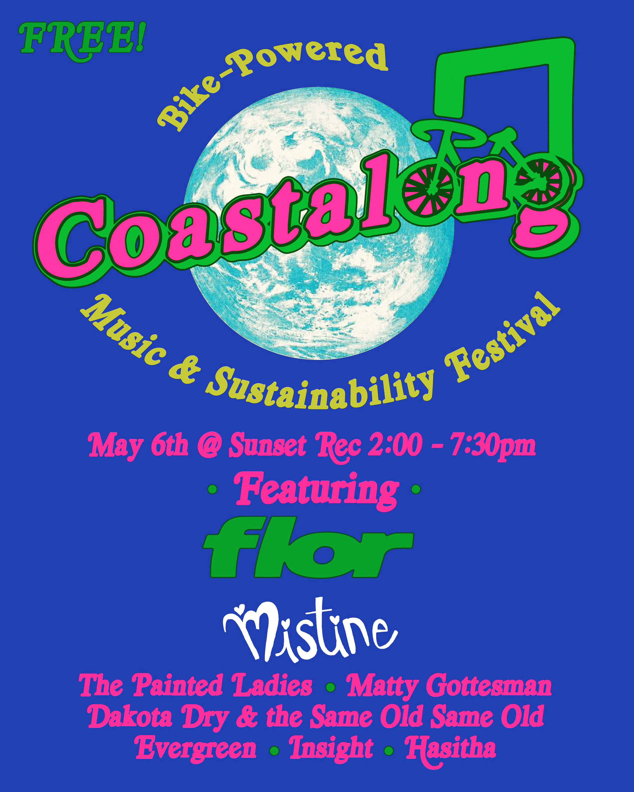

distortion / digital intimacy




I explore the relationship between body, technology, and perception. My work uses color, distortion, and composition to investigate digital intimacy and emotional projection.
Email: fffrannyfranfran469@gmail.com